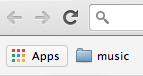
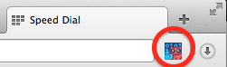

Getting started with Cryptocat
Thanks for installing Cryptocat. Now, it's easier than ever to chat with friends without risking your privacy. Here's how you can open Cryptocat in :
-
Open a new tab and click the Apps icon in your Chrome bookmarks bar:

- Click the Cryptocat icon to launch Cryptocat.
- Start chatting by typing in a name for your conversation and a nickname for yourself!
-
Click the Cryptocat icon in your Firefox toolbar to launch Cryptocat:

- Start chatting by typing in a name for your conversation and a nickname for yourself!
-
Click the chat bubble icon in your Safari toolbar to launch Cryptocat:

- Start chatting by typing in a name for your conversation and a nickname for yourself!
-
Click the Cryptocat icon in your Opera toolbar to launch Cryptocat:

- Start chatting by typing in a name for your conversation and a nickname for yourself!
Please remember that Cryptocat is not a magic bullet. While we are trying our best to make encrypted chat easy to use and accessible, remember to never trust any software with your life. Cryptocat is still under continuous research and improvement.
We hope you enjoy safe, private chats with Cryptocat!